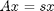
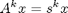
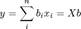
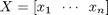
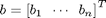
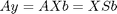
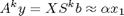
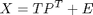
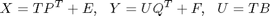
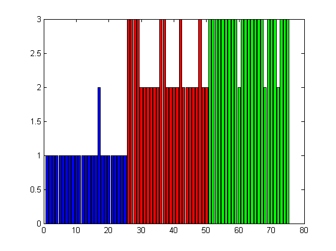

Principal Component Analysis and Partial Least Squares
Principal Component Analysis (PCA) and Partial Least Squares (PLS) are widely used tools. This code is to show their relationship through the Nonlinear Iterative PArtial Least Squares (NIPALS) algorithm.
Contents
The Eigenvalue and Power Method
The NIPALS algorithm can be derived from the Power method to solve the eigenvalue problem. Let x be the eigenvector of a square matrix, A, corresponding to the eignvalue s:

Modifying both sides by A iteratively leads to

Now, consider another vectro y, which can be represented as a linear combination of all eigenvectors:

where

and

Modifying y by A gives

Where S is a diagnal matrix consisting all eigenvalues. Therefore, for a large enough k,

That is the iteration will converge to the direction of x_1, which is the eigenvector corresponding to the eigenvalue with the maximum module. This leads to the following Power method to solve the eigenvalue problem.
A=randn(10,5); % sysmetric matrix to ensure real eigenvalues B=A'*A; %find the column which has the maximum norm [dum,idx]=max(sum(A.*A)); x=A(:,idx); %storage to judge convergence x0=x-x; %convergence tolerant tol=1e-6; %iteration if not converged while norm(x-x0)>tol %iteration to approach the eigenvector direction y=A'*x; %normalize the vector y=y/norm(y); %save previous x x0=x; %x is a product of eigenvalue and eigenvector x=A*y; end % the largest eigen value corresponding eigenvector is y s=x'*x; % compare it with those obtained with eig [V,D]=eig(B); [d,idx]=max(diag(D)); v=V(:,idx); disp(d-s) % v and y may be different in signs disp(min(norm(v-y),norm(v+y)))
2.7960e-012 6.0941e-007
The NIPALS Algorithm for PCA
The PCA is a dimension reduction technique, which is based on the following decomposition:

Where X is the data matrix (m x n) to be analysed, T is the so called score matrix (m x a), P the loading matrix (n x a) and E the residual. For a given tolerance of residual, the number of principal components, a, can be much smaller than the orginal variable dimension, n. The above power algorithm can be extended to get T and P by iteratively subtracting A (in this case, X) by x*y' (in this case, t*p') until the given tolerance satisfied. This is the so called NIPALS algorithm.
% The data matrix with normalization A=randn(10,5); meanx=mean(A); stdx=std(A); X=(A-meanx(ones(10,1),:))./stdx(ones(10,1),:); B=X'*X; % allocate T and P T=zeros(10,5); P=zeros(5); % tol for convergence tol=1e-6; % tol for PC of 95 percent tol2=(1-0.95)*5*(10-1); for k=1:5 %find the column which has the maximum norm [dum,idx]=max(sum(X.*X)); t=A(:,idx); %storage to judge convergence t0=t-t; %iteration if not converged while norm(t-t0)>tol %iteration to approach the eigenvector direction p=X'*t; %normalize the vector p=p/norm(p); %save previous t t0=t; %t is a product of eigenvalue and eigenvector t=X*p; end %subtracing PC identified X=X-t*p'; T(:,k)=t; P(:,k)=p; if norm(X)<tol2 break end end T(:,k+1:5)=[]; P(:,k+1:5)=[]; S=diag(T'*T); % compare it with those obtained with eig [V,D]=eig(B); [D,idx]=sort(diag(D),'descend'); D=D(1:k); V=V(:,idx(1:k)); fprintf('The number of PC: %i\n',k); fprintf('norm of score difference between EIG and NIPALS: %g\n',norm(D-S)); fprintf('norm of loading difference between EIG and NIPALS: %g\n',norm(abs(V)-abs(P)));
The number of PC: 4 norm of score difference between EIG and NIPALS: 3.20008e-012 norm of loading difference between EIG and NIPALS: 1.89247e-006
The NIPALS Algorithm for PLS
For PLS, we will have two sets of data: the independent X and dependent Y. The NIPALS algorithm can be used to decomposes both X and Y so that

The regression, U=TB is solved through least sequares whilst the decompsition may not include all components. That is why the approach is called partial least squares. This algorithm is implemented in the PLS function.
Example: Discriminant PLS using the NIPALS Algorithm
From Chiang, Y.Q., Zhuang, Y.M and Yang, J.Y, "Optimal Fisher discriminant analysis using the rank decomposition", Pattern Recognition, 25 (1992), 101--111.
% Three classes data, each has 50 samples and 4 variables. x1=[5.1 3.5 1.4 0.2; 4.9 3.0 1.4 0.2; 4.7 3.2 1.3 0.2; 4.6 3.1 1.5 0.2;... 5.0 3.6 1.4 0.2; 5.4 3.9 1.7 0.4; 4.6 3.4 1.4 0.3; 5.0 3.4 1.5 0.2; ... 4.4 2.9 1.4 0.2; 4.9 3.1 1.5 0.1; 5.4 3.7 1.5 0.2; 4.8 3.4 1.6 0.2; ... 4.8 3.0 1.4 0.1; 4.3 3.0 1.1 0.1; 5.8 4.0 1.2 0.2; 5.7 4.4 1.5 0.4; ... 5.4 3.9 1.3 0.4; 5.1 3.5 1.4 0.3; 5.7 3.8 1.7 0.3; 5.1 3.8 1.5 0.3; ... 5.4 3.4 1.7 0.2; 5.1 3.7 1.5 0.4; 4.6 3.6 1.0 0.2; 5.1 3.3 1.7 0.5; ... 4.8 3.4 1.9 0.2; 5.0 3.0 1.6 0.2; 5.0 3.4 1.6 0.4; 5.2 3.5 1.5 0.2; ... 5.2 3.4 1.4 0.2; 4.7 3.2 1.6 0.2; 4.8 3.1 1.6 0.2; 5.4 3.4 1.5 0.4; ... 5.2 4.1 1.5 0.1; 5.5 4.2 1.4 0.2; 4.9 3.1 1.5 0.2; 5.0 3.2 1.2 0.2; ... 5.5 3.5 1.3 0.2; 4.9 3.6 1.4 0.1; 4.4 3.0 1.3 0.2; 5.1 3.4 1.5 0.2; ... 5.0 3.5 1.3 0.3; 4.5 2.3 1.3 0.3; 4.4 3.2 1.3 0.2; 5.0 3.5 1.6 0.6; ... 5.1 3.8 1.9 0.4; 4.8 3.0 1.4 0.3; 5.1 3.8 1.6 0.2; 4.6 3.2 1.4 0.2; ... 5.3 3.7 1.5 0.2; 5.0 3.3 1.4 0.2]; x2=[7.0 3.2 4.7 1.4; 6.4 3.2 4.5 1.5; 6.9 3.1 4.9 1.5; 5.5 2.3 4.0 1.3; ... 6.5 2.8 4.6 1.5; 5.7 2.8 4.5 1.3; 6.3 3.3 4.7 1.6; 4.9 2.4 3.3 1.0; ... 6.6 2.9 4.6 1.3; 5.2 2.7 3.9 1.4; 5.0 2.0 3.5 1.0; 5.9 3.0 4.2 1.5; ... 6.0 2.2 4.0 1.0; 6.1 2.9 4.7 1.4; 5.6 2.9 3.9 1.3; 6.7 3.1 4.4 1.4; ... 5.6 3.0 4.5 1.5; 5.8 2.7 4.1 1.0; 6.2 2.2 4.5 1.5; 5.6 2.5 3.9 1.1; ... 5.9 3.2 4.8 1.8; 6.1 2.8 4.0 1.3; 6.3 2.5 4.9 1.5; 6.1 2.8 4.7 1.2; ... 6.4 2.9 4.3 1.3; 6.6 3.0 4.4 1.4; 6.8 2.8 4.8 1.4; 6.7 3.0 5.0 1.7; ... 6.0 2.9 4.5 1.5; 5.7 2.6 3.5 1.0; 5.5 2.4 3.8 1.1; 5.5 2.4 3.7 1.0; ... 5.8 2.7 3.9 1.2; 6.0 2.7 5.1 1.6; 5.4 3.0 4.5 1.5; 6.0 3.4 4.5 1.6; ... 6.7 3.1 4.7 1.5; 6.3 2.3 4.4 1.3; 5.6 3.0 4.1 1.3; 5.5 2.5 5.0 1.3; ... 5.5 2.6 4.4 1.2; 6.1 3.0 4.6 1.4; 5.8 2.6 4.0 1.2; 5.0 2.3 3.3 1.0; ... 5.6 2.7 4.2 1.3; 5.7 3.0 4.2 1.2; 5.7 2.9 4.2 1.3; 6.2 2.9 4.3 1.3; ... 5.1 2.5 3.0 1.1; 5.7 2.8 4.1 1.3]; x3=[6.3 3.3 6.0 2.5; 5.8 2.7 5.1 1.9; 7.1 3.0 5.9 2.1; 6.3 2.9 5.6 1.8; ... 6.5 3.0 5.8 2.2; 7.6 3.0 6.6 2.1; 4.9 2.5 4.5 1.7; 7.3 2.9 6.3 1.8; ... 6.7 2.5 5.8 1.8; 7.2 3.6 6.1 2.5; 6.5 3.2 5.1 2.0; 6.4 2.7 5.3 1.9; ... 6.8 3.0 5.5 2.1; 5.7 2.5 5.0 2.0; 5.8 2.8 5.1 2.4; 6.4 3.2 5.3 2.3; ... 6.5 3.0 5.5 1.8; 7.7 3.8 6.7 2.2; 7.7 2.6 6.9 2.3; 6.0 2.2 5.0 1.5; ... 6.9 3.2 5.7 2.3; 5.6 2.8 4.9 2.0; 7.7 2.8 6.7 2.0; 6.3 2.7 4.9 1.8; ... 6.7 3.3 5.7 2.1; 7.2 3.2 6.0 1.8; 6.2 2.8 4.8 1.8; 6.1 3.0 4.9 1.8; ... 6.4 2.8 5.6 2.1; 7.2 3.0 5.8 1.6; 7.4 2.8 6.1 1.9; 7.9 3.8 6.4 2.0; ... 6.4 2.8 5.6 2.2; 6.3 2.8 5.1 1.5; 6.1 2.6 5.6 1.4; 7.7 3.0 6.1 2.3; ... 6.3 3.4 5.6 2.4; 6.4 3.1 5.5 1.8; 6.0 3.0 4.8 1.8; 6.9 3.1 5.4 2.1; ... 6.7 3.1 5.6 2.4; 6.9 3.1 5.1 2.3; 5.8 2.7 5.1 1.9; 6.8 3.2 5.9 2.3; ... 6.7 3.3 5.7 2.5; 6.7 3.0 5.2 2.3; 6.3 2.5 5.0 1.9; 6.5 3.0 5.2 2.0; ... 6.2 3.4 5.4 2.3; 5.9 3.0 5.1 1.8]; %Split data set into training (1:25) and testing (26:50) idxTrain = 1:25; idxTest = 26:50; % Combine training data with normalization X = [x1(idxTrain,:);x2(idxTrain,:);x3(idxTrain,:)]; % Define class indicator as Y Y = kron(eye(3),ones(25,1)); % Normalization xmean = mean(X); xstd = std(X); ymean = mean(Y); ystd = std(Y); X = (X - xmean(ones(75,1),:))./xstd(ones(75,1),:); Y = (Y - ymean(ones(75,1),:))./ystd(ones(75,1),:); % Tolerance for 90 percent score tol = (1-0.9) * 25 * 4; % Perform PLS [T,P,U,Q,B] = pls(X,Y,tol); % Results fprintf('Number of components retained: %i\n',size(B,1)) % Predicted classes X1 = (x1(idxTest,:) - xmean(ones(25,1),:))./xstd(ones(25,1),:); X2 = (x2(idxTest,:) - xmean(ones(25,1),:))./xstd(ones(25,1),:); X3 = (x3(idxTest,:) - xmean(ones(25,1),:))./xstd(ones(25,1),:); Y1 = X1 * (P*B*Q'); Y2 = X2 * (P*B*Q'); Y3 = X3 * (P*B*Q'); Y1 = Y1 .* ystd(ones(25,1),:) + ymean(ones(25,1),:); Y2 = Y2 .* ystd(ones(25,1),:) + ymean(ones(25,1),:); Y3 = Y3 .* ystd(ones(25,1),:) + ymean(ones(25,1),:); % Class is determined from the cloumn which is most close to 1 [dum,classid1]=min(abs(Y1-1),[],2); [dum,classid2]=min(abs(Y2-1),[],2); [dum,classid3]=min(abs(Y3-1),[],2); bar(1:25,classid1,'b'); hold on bar(26:50,classid2,'r'); bar(51:75,classid3,'g'); hold off % The results show that most samples are classified correctly.
Number of components retained: 2